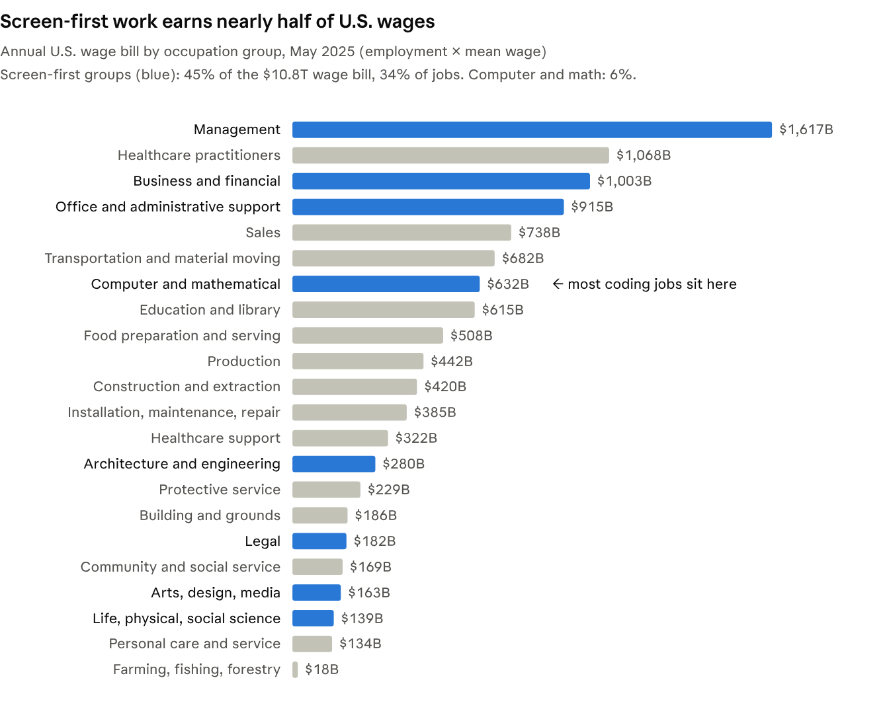
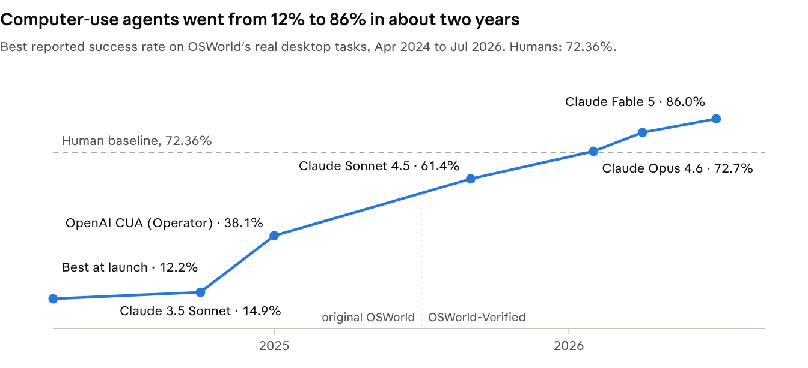

The first wave of generative AI was chat. Nearly four years ago, ChatGPT showed that anyone could type a question and get a thoughtful answer, and it reached 100 million users in two months. Natural language became a universal interface to intelligence. But the AI lived behind glass. It could advise you on your work; you still had to copy, paste, click and execute everything yourself.
The second wave was coding. In 2025, agents stopped suggesting the next line and started navigating repositories, running commands, reading error logs and shipping whole features. AI stepped out of the chat window and began producing outcomes instead of information. Software engineering became the first profession where AI does a large share of the actual work.
So what comes third? Many leap to the far horizon: humanoid robots folding laundry, autonomous labs discovering new physics. Those frontiers are real, but jumping to them skips the enormous continent right in front of us.
The next frontier is all of digital work. Not talking about work, and not just writing the code that powers it. Actually getting the work done, anywhere a screen is the workplace.
Coding was the beachhead
Coding was not special. It was simply the easiest door to open:
- It is text. Language models are text machines, and code is the most structured text there is.
- It checks itself. A compiler complains; a test passes or fails. That objective signal is exactly what reinforcement learning needs, and it is why METR measures agent progress on software tasks.
- Mistakes are cheap. A bad commit is one
git revertaway. - The builders were the users. AI labs are full of programmers, and they built tools for the job they knew best.
What coding proved is bigger than coding: AI can take an objective, break it into steps, use tools, keep track of state over long tasks and check its own results. Once that threshold is crossed, software engineering stops looking like the destination and starts looking like the beachhead.
After all, every digital task is bits in, bits out. A spreadsheet is a small program. A financial report is a few queries plus prose. An insurance claim is a form, a lookup and a decision. An agent that writes code can do all of that wherever an API exists. Where none exists, an agent that sees a screen and moves a mouse can do it the way a person does, click by click. Between the two, every piece of software ever made is in reach, including the 20-year-old ERP system and the government portal nobody will ever modernize.
The continent of digital work
Think about how people actually spend their days. A marketing manager researches competitors, analyzes performance, builds a campaign plan and coordinates a launch. A financial analyst pulls data from five systems, reconciles spreadsheets, chases anomalies and writes recommendations. A founder evaluates vendors, builds a website, makes a pitch deck and handles a hundred administrative chores. And all of us fight insurance portals, dispute bills, book travel and fill out endless web forms.
These are not chat problems, and they are not coding problems. They are execution problems. Humans are the glue between fragmented software: we open fifteen tabs, read a Slack message, check a spreadsheet, cross-reference a PDF, click through a decade-old dashboard and paste a summary into an email. None of it needs physical dexterity. All of it happens through a keyboard, a mouse and a screen.
The prize is enormous. In the latest BLS occupational data, computer and math occupations, home to most software developers, earn about 6% of U.S. wages. The groups whose work happens mostly on a screen earn about 45%: $4.9 trillion a year, from a third of all jobs.

Source: BLS Occupational Employment and Wage Statistics, May 2025, Table 1. 22 major groups. Screen-first = management, business and financial, computer and math, architecture and engineering, sciences, legal, arts and media, office support (author's classification).
This is a rough cut: managers spend hours in meetings, and nurses and salespeople spend hours on screens. But the order of magnitude is clear. Screen-first work earns nearly eight times what computer and math occupations earn, and worldwide Forrester counted 1.25 billion information workers back in 2018. The value at stake is not today's software spend. It is the labor behind the work.
From tools to digital workers
For forty years, software has rested on one assumption: the human does the work and the computer provides the tools. Spreadsheets, browsers, design apps and enterprise systems are all levers for a human hand.
AI flips that division of labor. Instead of asking how to do something, you ask for the thing itself. Research this market and prepare an investment memo. Analyze our pipeline, flag the biggest risks and update the forecast. Review these contracts and draft a revised version. A request becomes a plan, the plan becomes actions across many applications, and the actions become a finished deliverable.
Turning an assistant into a digital worker takes six abilities:
- Understand intent: turn a loose goal into clear objectives and constraints.
- Plan and execute: break the work into steps and act across applications.
- Use existing tools: browsers, files, APIs, enterprise systems, desktop software.
- Maintain context: know the user's projects, preferences and history.
- Verify results: check its own work and recover from failures.
- Know when to ask: recognize uncertainty and get approval before consequential actions.
The human role changes with it, from operator of software to director of work. The new interface fits in one sentence: Here's what I want to achieve; figure out how, keep me informed, ask when necessary, and show me the result.
Where we are today
The screen is no longer a barrier. When the OSWorld benchmark of real desktop tasks launched in 2024, the best model finished 12% of them and humans 72%. Agents passed the human mark in early 2026 and now sit around 86%.

Sources: OSWorld paper (Apr 2024); Anthropic and OpenAI launch reports; official OSWorld-Verified leaderboard. Best reported score at each milestone; original OSWorld through mid-2025, OSWorld-Verified after, so early and late points are not strictly comparable.
That benchmark is nearly saturated, so its authors built a harder one. OSWorld 2.0 has 108 end-to-end workflows, each taking a skilled person a median of 1.6 hours. At its June launch, the best agents fully completed fewer than a quarter of them. Three months later the best reported figure was close to half, on a revised release that is not strictly comparable.
Task length tells the same story. In early 2025, METR found frontier agents could finish software tasks that take an expert about 50 minutes, with that horizon doubling roughly every seven months. By April 2026 the best measured model reached about 17 hours, the ceiling of what METR's task suite can measure.
Usage is following. Anthropic's June 2026 Economic Index reports that Claude sessions, once mostly conversations, now increasingly consist of long-running agentic tasks. Documents and reports are already about as common a deliverable as code. And over a third of surveyed users expect AI to do most or nearly all of their work tasks next year.
Why it is harder than coding
If digital work is just software manipulation, why didn't it fall at the same time as coding? Because the digital world is far messier than a code repository.
- Interfaces aren't clean. Much of the world runs on legacy portals, brittle spreadsheets and SaaS tools with poor APIs. This one is largely solved: agents now see and click the way people do.
- Context is scattered. In coding, the truth lives in the repo. Elsewhere it is smeared across chat threads, stale wikis, email attachments and unwritten norms: why this client gets special terms, which spreadsheet is the real one.
- Side effects are irreversible. You cannot
git revertan awkward email to your biggest customer or a wire transfer to the wrong account. Worse, an agent that can move money can be tricked by instructions an attacker planted in an email. - Success is fuzzy. No unit test returns PASS on a quarterly business review or a vendor negotiation.
- Reliability compounds. An agent that does 90% of a workflow and silently fails the last 10% is worse than useless. The METR model that manages 17-hour tasks half the time drops to about 3 hours at 80% success. Payroll needs 99.9%.
The OSWorld 2.0 authors describe the failures precisely: today's agents rarely stumble on screen control or coding. They lose track of constraints, miss information that arrives mid-task, guess instead of asking and skip verification. Those are not robot problems. They are new-employee problems.
And they are giving way. Memory and deep integrations are stitching scattered context together. Sandboxes, audit trails and approval checkpoints let agents do most of the legwork while pausing for a human click before anything irreversible. The winning products won't just be the smartest. They will be the ones people trust to get things done.
From applications to outcomes
This may be the deepest change. Today, to prepare a business report, you think about which applications to open: a browser, a spreadsheet, a document editor, a slide tool, three dashboards. In an AI-native world you describe the outcome, and the system works out which tools, data and actions it needs. The application stops being the center of computing. The task becomes the center.
Applications won't disappear; databases, transaction systems and specialized tools remain the infrastructure. But as I argued in AI All the Way Down, the agent becomes a new layer above them. Software will expose its capabilities to agents rather than to clicking humans, and customers will increasingly pay for outcomes (a closed quarter, a filed claim, a launched campaign) rather than for seats. AI is not competing to become one more app in the stack. It is competing to become the execution layer for most of the world's digital activity.
For workers, the scarce skills shift from knowing which buttons to press in Salesforce or Excel to taste, judgment, relationships, accountability and deciding what is worth doing at all. I have argued before that this is a gold rush, not an apocalypse: when digital output gets cheap, demand for it explodes and new work appears. But the transition won't be gentle for everyone. Entry-level roles, built on exactly the routine screen work agents now do well, will feel it first.
Bits before atoms
The history of computing is a history of abstraction: from machine code to programming languages, from command lines to graphical interfaces, from local software to the cloud, and now from explicit instructions to natural language. The next abstraction is from using software to getting work done.
- Phase 1, chat: AI mastered language and reasoning in isolation.
- Phase 2, coding: AI mastered autonomous execution in the cleanest digital environment there is.
- Phase 3, all digital work: AI generalizes that execution to every screen, workflow and piece of software on earth.
Before AI reshapes the world of atoms, it will absorb the world of bits. Then the bottleneck moves to what a screen cannot touch: building, healing, repairing, moving, caring, the other two-thirds of jobs. Until robots catch up, humanity's comparative advantage is turning what the machines design into physical reality.
Chat showed us AI could think with us. Coding showed us it could build for us. Next, it will run the digital machinery of the modern world. Not one task, not one application, not one profession: a majority of digital work.
Comments